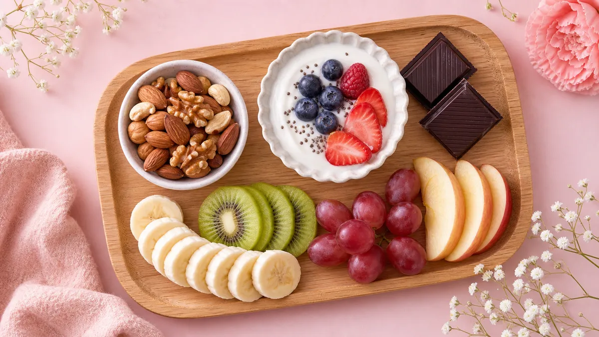

「間食したいけど、ダイエット中だから我慢しなきゃ…」そう思っていませんか？
実は、間食を完全にやめると食事で食べすぎてしまうことがあります。大切なのは「食べない」ではなく「何を・いつ・どれくらい食べるか」を整えること。
この記事では、ダイエット中でも安心して食べられるおすすめ間食15選と、太りにくい食べ方のポイントを具体的にご紹介します。
ダイエット中に間食してもいい理由
間食を完全に禁止すると、次の食事で食べすぎたり、甘いものへの欲求が爆発したりしやすくなります。
適切な間食には次の3つのメリットがあります。
- ✅ 食事と食事の間の血糖値の急上昇・急降下をゆるやかにする
- ✅ 次の食事での食べすぎを防ぐ
- ✅ 食事制限によるストレスを軽減して継続しやすくなる
ポイントは1回あたり100〜200kcal以内を目安にすること。これを守るだけで、間食はダイエットの味方になります。
太りにくい間食の3つの条件
間食を選ぶときは、次の3つを意識してみてください。
① タンパク質・食物繊維が含まれている
腹持ちがよく、血糖値の上昇をゆるやかにしてくれます。ナッツ・ヨーグルト・チーズなどが代表例です。
② 糖質・脂質が少なめ
スナック菓子やチョコレートは糖質と脂質が多く、100kcalを超えやすいので量に注意。糖質10g以下を目安にすると選びやすくなります。
③ 食べる時間は14〜16時が理想
夜21時以降の間食は脂肪になりやすいとされています。午後の活動時間帯に食べるのがおすすめです。
🍓 ダイエット間食おすすめ8選｜カロリー＆ポイント早見表
1回あたり100〜200kcal以内を目安に選ぼう
ダイエット中のおすすめ間食15選
上記の早見表に加え、さらに詳しくおすすめ間食を15種類ご紹介します。
【1〜5位】コンビニでも買えるお手軽間食
- 素焼きミックスナッツ（25g）：小袋タイプを選べば食べすぎ防止に。アーモンド・くるみ・カシューナッツがおすすめ。
- 無糖ギリシャヨーグルト（100g）：タンパク質が豊富で腹持ちよし。フルーツを少し加えると満足度アップ。
- ゆで卵（1個）：コンビニでも手軽に購入可能。塩分が気になる方は味付きでなくプレーンを選んで。
- チーズ（1〜2個）：個包装のプロセスチーズは1個約60kcalで管理しやすい。
- 豆乳（無調整・200ml）：飲み物感覚で間食に。調整豆乳より糖質が少なくおすすめ。
【6〜10位】甘いものが食べたいときの間食
- 高カカオチョコ（70%以上・1〜2枚）：甘さを満たしながらポリフェノールも摂れる。食後すぐより間食タイムに。
- 干し芋（30g）：自然な甘さで食物繊維が豊富。ただし糖質が高めなので食べすぎ注意。
- りんご（小1/2個）：ペクチンが腸内環境を整えてくれる。皮ごと食べると食物繊維がより摂れる。
- バナナ（1/2本）：エネルギー補給に最適。運動前後の間食にも向いている。
- 甘酒（ノンアルコール・100ml）：「飲む点滴」とも呼ばれる栄養豊富な飲み物。砂糖不使用のものを選んで。
【11〜15位】食べごたえ重視の間食
- 枝豆（冷凍・50g）：解凍するだけで食べられる手軽さ。タンパク質・食物繊維・鉄分を一度に摂れる。
- カッテージチーズ（100g）：チーズの中でも脂質が少なくヘルシー。野菜スティックと合わせると◎。
- おからクッキー（2〜3枚）：市販品を選ぶ際は糖質・カロリーを確認。食物繊維が多く腹持ちよし。
- わかめスープ（1杯）：温かい汁物は満腹感を得やすい。食欲を落ち着かせたいときに◎。
- 小魚スナック（10g）：カルシウム・タンパク質が摂れるスナック系。噛みごたえがあり満足感が続く。
間食で失敗しないための4つのルール
ルール1：食べる前に量を決める
袋ごと食べると量が把握できなくなります。必ず小皿や小袋に分けてから食べる習慣をつけましょう。
ルール2：食べるタイミングは14〜16時
夜21時以降の間食は控えめに。どうしても食べたいときはホットドリンク＋ナッツ数粒程度に留めるのがおすすめです。
ルール3：「ながら食べ」をやめる
スマホを見ながら食べると満腹感を感じにくくなります。間食の時間は5〜10分だけ食べることに集中してみてください。
ルール4：週1回だけ「好きなもの」を食べる日を作る
完全に禁止するとストレスが溜まります。週1回のご褒美デーを設けることで、長期的に続けやすくなります。
食事全体のバランスについては、ダイエット献立1週間プランの食事術も参考にしてみてください。
間食を上手に取り入れた1日の食事例
間食を組み込んだ1日の食事リズムのイメージです。
- 🌅 7:00｜朝食（タンパク質＋野菜中心）
- ☕ 10:00｜必要なら軽めの間食（ナッツ10g程度）
- 🍱 12:00｜昼食（バランスよく）
- 🍓 15:00｜メインの間食（100〜200kcal以内）
- 🌙 19:00｜夕食（炭水化物は少なめに）
- 🚫 21:00以降｜間食はなるべく控える
1週間の食事プランをまとめて確認したい方は、ダイエットレシピ1週間分の朝昼晩プランもあわせてご覧ください。
コンビニで買える間食の選び方チェックポイント
コンビニで間食を選ぶときは、栄養成分表示を確認する習慣をつけましょう。
- 📌 カロリー：200kcal以下を目安に
- 📌 糖質：10〜15g以下が理想
- 📌 タンパク質：5g以上あると腹持ちよし
- 📌 原材料の先頭が砂糖・果糖ブドウ糖液糖のものは避ける
また、食事管理の記事一覧では、間食以外の食事管理に役立つ情報もまとめています。ぜひ参考にしてみてください。
よくある質問
Q. ダイエット中、間食は1日何回まで食べていいですか？
1日1〜2回、合計200〜300kcal以内を目安にするのがおすすめです。食事と食事の間が5時間以上空く場合に1回取り入れるイメージが理想的です。夜21時以降はなるべく控えましょう。
Q. チョコレートはダイエット中に食べてもいいですか？
カカオ70%以上の高カカオチョコレートであれば、1〜2枚（約60kcal）を目安に食べることができます。ミルクチョコや菓子パンに比べて糖質が低く、ポリフェノールも含まれています。ただし食べすぎには注意が必要です。
Q. 夜どうしても小腹が空いたときはどうすればいいですか？
温かいホットドリンク（無糖のハーブティーや白湯など）を飲むだけで空腹感が和らぐことがあります。どうしても食べたい場合は、素焼きナッツ5〜6粒（約50kcal）やわかめスープ1杯など、消化に負担が少ないものを少量にとどめましょう。
まとめ：間食は「やめる」より「上手に選ぶ」
ダイエット中の間食は、正しく選べば食事管理を助けてくれる存在です。
- ✅ 1回あたり100〜200kcal以内を目安に
- ✅ 食べるタイミングは14〜16時が理想
- ✅ タンパク質・食物繊維が含まれるものを選ぶ
- ✅ 量を決めてから食べる・ながら食べをしない
- ✅ 週1回のご褒美デーで長続きさせる
無理に我慢するより、賢く選ぶことで食事管理を楽しく続けていきましょう！